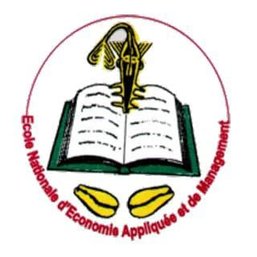

BIENVENUE EN IG1/B

Ecole Nationale d'Economie Appliquée et de Management
Je suis Chrislaine Précieuse Yana AGASSOUNON, élève en 1ère année d'Analyse Informatique et Programmation à l'ENEAM.
Passionnée de culture française et de lecture, je désire impacter mon monde de par mes capacités et mon leadership.
Une femme forte, indépendante et déterminée, telle est ma vision de la Chrislaine du futur.
- Je suis détentrice du baccalauréat 2021 série D obtenu au Collège Catholique Saint Jean Baptiste de Cotonou
- J'ai obtenu le brevet 2018 moderne court au Cours Secondaire Notre Dame des Apôtres de Cotonou.
- J'ai eu mon Certificat d'Etudes Primaires en juin 2014.
Revenir en Arrière